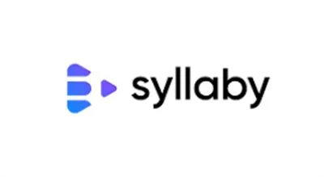
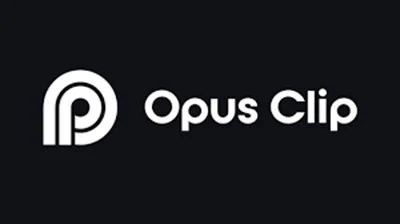
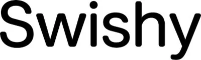

Najbolji AI Video Alati 2026 – 11 Testiranih Recenzija
AI video alati su u 2026. godini potpuno promijenili način na koji kreatori, marketingaši i tvrtke produciraju sadržaj. Bez obzira trebate li generirati video iz teksta, pretvoriti dugi sadržaj u viralne kratke klipove, stvoriti AI avatare ili animirati brand — ovo su najbolji AI video alati dostupni danas. Svaki alat na ovoj listi testirao je i recenzirao tim WebAlati.
Neki linkovi na ovoj stranici su affiliate linkovi. Možemo zaraditi proviziju bez dodatnih troškova za vas. Pravila →

Syllaby
FreemiumAI platforma za kreiranje kratkih videa za TikTok, Instagram Reels i YouTube Shorts. Analizira trendove i generira skripte, videe bez lica, AI avatare i glasovne zapise — bez kamere.
Isprobaj Syllaby →
Opus Clip
FreemiumPretvara duge videe u kratke viralne klipove automatski. AI pronalazi najzanimljivije trenutke i dodaje titlove optimizirane za društvene mreže.
Isprobaj Opus Clip →
Kling AI
FreemiumNapredna AI platforma za generiranje videa iz teksta i slika. Podržava tekst-u-video, sliku-u-video i sinkronizaciju usana s realističnom fizikalnom animacijom.
Isprobaj Kling AI →
Klap
FreemiumPretvara dugačke YouTube videe i podcastove u kratke vertikalne klipove s titlovima. Idealan alat za konzistentnu produkciju kratkoformatnog sadržaja.
Isprobaj Klap →
KreadoAI
FreemiumGenerira AI avatar videe na 100+ jezika iz teksta. Idealno za lokalizirane marketinške kampanje, objašnjavajuće videe i e-learning sadržaj.
Isprobaj KreadoAI →
Hedra
FreemiumPretvara statične slike u realistične videie s govorom i sinhronizacijom usana. Stvorite profesionalne avatar videe bez opreme za snimanje.
Isprobaj Hedra →
Medeo
FreemiumStvara i uređuje potpune videe jednostavnim upisivanjem instrukcija. AI generira vizuale, glasovne zapise i rezove kroz konverzacijsko sučelje.
Isprobaj Medeo →
Swishy AI
BesplatnoBesplatna platforma za kreiranje profesionalnih animacija i kinetičke grafike iz ideja — bez iskustva u dizajnu. Odlično za društvene mreže i brendove.
Isprobaj Swishy AI →
Pixabay
BesplatnoMilijuni besplatnih stock fotografija, videa i audio zapisa bez ograničenja autorskih prava. Neophodan resurs za marketingaše i kreatore sadržaja.
Isprobaj Pixabay →Često Postavljana Pitanja – AI Video Alati
Koji je najbolji AI generator videa u 2026.?
Kling AI i Syllaby su među najboljima. Kling AI se ističe realističnim generiranjem videa iz teksta, dok je Syllaby idealan za kratkoformatni sadržaj za društvene mreže bez pojave pred kamerom.
Koji AI alat pretvara duge videe u kratke klipove?
Opus Clip i Klap su lideri u ovoj kategoriji. Oba automatski pronalaze najzanimljivije trenutke iz dugih videa i formatiraju ih kao vertikalne klipove s titlovima.
Postoje li besplatni AI video alati?
Da — Swishy AI i Pixabay su potpuno besplatni. Kling AI, Opus Clip, Klap i Syllaby nude besplatne planove s ograničenjima.
Može li AI napraviti video samo iz tekstualnog opisa?
Da — Kling AI i Syllaby generiraju video samo iz teksta. Kling AI je idealan za kinematske kratke klipove s realističnim pokretima i fizikom. Syllaby je optimiziran za kratkoformatni video na društvenim mrežama s AI avatar prezentatorima. Oba imaju besplatne planove za testiranje kvalitete.
Koji AI alati kreatori koriste za YouTube?
Najpopularniji AI alati za YouTube kreatore su: Opus Clip ili Klap (pretvaranje dugih videa u Shorts), Thumbnailtest (A/B testiranje sličica prije objave), ElevenLabs (AI glasovna naracija) i Syllaby (kreiranje AI videa bez snimanja). Većina nudi besplatne planove ili probe.
Neki linkovi na ovoj stranici su affiliate linkovi. Možemo zaraditi proviziju bez dodatnih troškova za vas. Pravila →